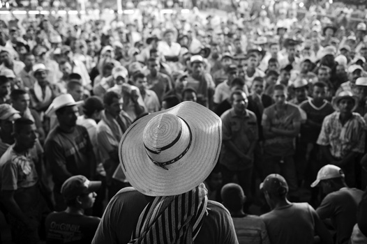
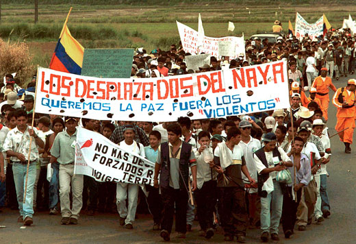
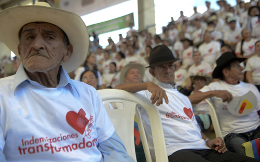
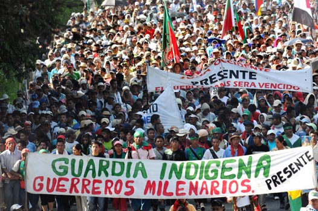

El conflicto armado que padece Colombia desde antes de mediados del siglo XX, se ha convertido en el más antiguo del hemisferio occidental.
-
01
El origen del conflicto armado
Open or CloseHasta el presente ha habido diferentes intentos para finalizarlo; desde enormes ofensivas militares, hasta procesos de diálogo y negociación, sin que se haya logrado su solución y superación definitiva.
Estadísticas de acciones bélicas en el conflicto armado colombiano, entre 1988 y 2012. En las últimas décadas, Colombia vio aumentar la violencia y con ella el número de víctimas. Los agentes que provocaron estas muertes son diversos, van desde las guerrillas de izquierda hasta el propio Estado.
De acuerdo con el Centro de Memoria Histórica, entre 1958 y 2012 el conflicto armado colombiano ha causado 218 094 muertos, de los cuales el 19 % son combatientes y el 81 % civiles. Este es el equivalente a la población de una ciudad como Popayán.
Preguntarse por el origen del conflicto armado implica tratar de entender sus causas, como una combinación de factores económicos, políticos y sociales que produjeron su estallido y escalamiento progresivo, hasta la situación actual.
Recuerda
Algunos estudiosos en el tema del conflicto armado colombiano han propuesto la siguiente periodización:
- 1946-1958: Confrontación bipartidista.
- 1958-1963 Bandolerismo.
- 1963-hasta nuestros días. Confrontación política guerrillera comunista.
Profundiza
01.1El problema de la tenencia de la tierra en Colombia
En el ámbito económico, uno de los aspectos más aceptados sobre el origen del conflicto armado en Colombia tiene que ver con el problema del uso y tenencia de la propiedad agraria.
Hacia los años treinta se presentaron en Colombia diversas movilizaciones sociales de campesinos e indígenas que reclamaban la recuperación de sus tierras, ocurrida tras sangrientos procesos de despojo impulsados por grandes hacendados. La Ley 200 de 1936, impulsada por el presidente López Pumarejo, intentó favorecer la titulación de tierras al campesinado, pero -ante la férrea oposición de las élites rurales- fue derogada en 1944 por su mismo creador.
Aun a mediados de siglo Colombia era un país cuya población era predominantemente rural y el campesinado debía luchar contra los títulos de propiedad falsos que hábiles comerciantes, notarios y hacendados, hacían valer para obtener las tierras mejoradas que los colonos iban desmontando en la zona cafetera, Santander, Tolima y Valle del Cauca, entre otros. De esta manera, la hacienda se expandía a costa de las parcelas campesinas.
En las primeras décadas del siglo XX empezaron a surgir líderes campesinos que lucharon por un acceso a la tierra que garantizara la sobrevivencia de la gran mayoría de la población rural, que poco a poco se había ido quedando con las manos vacías. Juan de la Cruz Varela, fue uno de estos líderes. Su actividad de resistencia ocurrió en la región del Sumapaz, y llegó a ser congresista en representación del Partido Comunista.
De este modo, los hacendados fueron expulsando a los desposeídos, quienes se vieron obligados a colonizar nuevas tierras en el Magdalena medio, la ribera occidental del río Cauca y, posteriormente, en el piedemonte llanero. Por esto, líderes y organizaciones como Jorge Eliécer Gaitán, Erasmo Valencia y el Partido Comunista, incentivaron la creación de "ligas campesinas" para agrupar al campesinado y hacer frente a los poderosos hacendados. El conflicto agrario se agudizó.
Colombia llegó a la segunda mitad del siglo XX viendo cómo las mejores tierras estaban concentradas en manos de hacendados y terratenientes, mientras los campesinos debían abandonar sus parcelas, tumbar monte en terrenos baldíos o marchar a las ciudades.
Con el asesinato de Jorge Eliécer Gaitán la tensión aumentó, pues la persecución conservadora contra liberales y comunistas llevó a estos últimos a adoptar una estrategia de "autodefensa campesina", y desde el Sumapaz, en Cundinamarca, y el municipio de Chaparral, en el Tolima, avanzaron hacia la cordillera Central, el piedemonte llanero y el Cauca. Durante una década conformaron organizadas colonias agrícolas, resistieron varias operaciones militares, incluyendo la más feroz de ellas: la operación Marquetalia en 1964.
Recuerda
"La consecuencia más notable de los procesos de violencia es la expulsión del campesinado y la concentración de la propiedad rural. A su vez, el hambre de tierras y recursos productivos del campesinado se expresa en movimientos dirigidos a la invasión de haciendas, en corrientes migratorias hacia frentes de colonización, en marchas campesinas por servicios públicos y en diversas formas de relación con movimientos armados revolucionarios o clientelas armadas de propietarios y narcotraficantes". Alejandro Reyes Posada.
La relación entre el conflicto agrario y el conflicto armado radica en que las zonas de colonización de mediados de siglo son las mismas donde se arraigan las guerrillas actuales, y esto ocurre porque ese campesinado desposeído encontró en la guerrilla la manera de sobrevivir y defender sus tierras.
01.2La historia política del conflicto
01.2.1El Bogotazo y la violencia bipartidista: 1946-1958
La confrontación entre liberales y conservadores tuvo, a mediados del siglo XX, un momento crucial: el asesinato del caudillo liberal Jorge Eliécer Gaitán, el 9 de abril de 1948. Este hecho desató una gran insurrección popular conocida como El Bogotazo.
Luego de El Bogotazo, la represión del gobierno conservador se enfiló contra los militantes gaitanistas y el liberalismo en general, lo que condujo a que este partido no participara en las elecciones de 1950, que le dieron el triunfo al dirigente radical conservador Laureano Gómez.
El 9 de abril de 1948, a raíz del asesinato del caudillo liberal Jorge Eliécer Gaitán, se desató una insurrección popular sin precedentes que semidestruyó la ciudad y dejó como resultado fatal centenares de muertos y miles de heridos. Esos hechos se conocieron como "El Bogotazo".
El gobierno de Gómez recrudeció la persecución contra los liberales en todo el país, pero especialmente en las regiones donde eran mayoría. Buena parte de la militancia liberal comenzó a organizarse y a tomar las armas. En su mayoría eran campesinos que no tuvieron otro camino para salvar su vida que organizarse en guerrillas de filiación liberal e iniciar una ofensiva contra el gobierno. Rápidamente fueron creciendo en número y en capacidad de combate; empezaron a controlar regiones enteras de los llanos orientales, el Tolima, Santander y la cordillera Central.
Un sector del Partido Conservador no comulgaba plenamente con las ideas de Gómez, y junto con los líderes liberales se pusieron de acuerdo para promover un golpe de Estado liderado por las fuerzas militares. El golpe ocurrió el 13 de junio de 1953.
01.2.2Rojas Pinilla y la pacificación: 1953-1958
Con el apoyo de líderes conservadores y liberales, el teniente general Gustavo Rojas Pinilla derrocó a Laureano Gómez, quien viajó al exilio. El nuevo gobierno promulgó leyes de amnistía y diseñó políticas para pacificar el país.
Buena parte de los guerrilleros liberales aceptaron el llamado del gobierno de entregar las armas. Sin embargo, unas facciones se acercaron al movimiento comunista, que también venía conformando grupos armados en algunas zonas del Tolima, Valle, Cauca y la región cafetera, y desistieron de firmar la paz. Aquella fue la semilla de las guerrillas que en 1964 conformaron las Fuerzas Armadas Revolucionarias de Colombia (Farc).
Amnistía de 1953. El general Duarte Blum (izda.) acompaña a Guadalupe Salcedo (centro) y Dumar Aljure (dcha.), dos de los jefes de la guerrilla liberal de los llanos, que aceptaron la propuesta de amnistía promulgada por Rojas Pinilla.
Para 1957 Rojas Pinilla demostró estar a gusto en el poder. Rápidamente la cúpula liberal, encabezada por Alberto Lleras, viajó a España a entrevistarse con Laureano Gómez. Ambos pactaron un acuerdo para deponer a Rojas Pinilla y realizar una alianza de gobierno liberal-conservadora, que se conoció como "Frente Nacional".
01.2.3El Frente Nacional y el surgimiento de las guerrillas: comunistas: 1958-1974
Al final del gobierno de Rojas Pinilla la confrontación liberal-conservadora había cesado. La política de pacificación funcionó mientras buena parte de las guerrillas liberales entregó sus armas.
Las amenazas que se dibujaban en el horizonte estaban enmarcadas por el crecimiento de los grupos guerrilleros de carácter comunista, nutridos de antiguos liberales desencantados con su partido y el surgimiento de pequeños grupos de bandoleros, que azotaban diferentes localidades actuando como delincuencia común.
En este contexto, tras la caída del gobierno de Rojas Pinilla, se inició en 1958 la serie de cuatro gobiernos alternados entre liberales y conservadores, fruto del pacto firmado entre los dos partidos, conocido como Frente Nacional. El acuerdo definía que durante 16 años, los cargos públicos (alcaldías, gobernaciones, empleados de los ministerios, policía y magisterio, entre otros) se repartirían entre los militantes de los dos partidos.
El primer presidente del Frente Nacional fue Alberto Lleras Camargo (liberal: 1958-1962), le siguieron: Guillermo León Valencia (conservador: 1962-1966), Carlos Lleras Restrepo (liberal: 1966-1970) y Misael Pastrana Borrero (conservador: 1970-1974).
La década de los sesenta fue el momento clave en que la confrontación liberal-conservadora se transformó en guerra revolucionaria, ya que algunos de los grupos armados liberales se convirtieron en guerrillas que buscaban tomar el poder del Estado.
Recuerda
El surgimiento de las guerrillas revolucionarias tuvo varias causas:
- El despojo de tierras a que fueron sometidas miles de familias campesinas por parte de hacendados y terratenientes.
- La represión conservadora, con la policía y grupos de civiles armados, contra los liberales.
- La Revolución cubana (1959), que mostró que era posible derrocar un gobierno injusto y despótico.
- La radicalización política de jóvenes, intelectuales, artistas, sindicatos y algunos clérigos.
01.3El contexto internacional de la Guerra Fría y la violencia colombiana
La Guerra Fría, que se inició con el final de la Segunda Guerra Mundial (1945) y terminó con el colapso de la Unión Soviética en 1991, se caracterizó por el enfrentamiento indirecto de las dos superpotencias: Estados Unidos y la Unión Soviética.
Estados Unidos representaba el capitalismo, la Unión Soviética, al comunismo; cada uno encabezaba un bloque de países que obedecían sus órdenes. América Latina y Colombia no estuvieron ajenas a este proceso.
Recuerda
Durante la segunda mitad del siglo XX la política norteamericana hacia el subcontinente recuperó la vieja "doctrina Monroe". En 1947 se firmó el TIAR (Tratado Interamericano de Asistencia Recíproca), por el cual se daba autorización a Estados Unidos de intervenir militarmente en cualquier país si consideraba que estaba amenazado por una potencia extranjera; además, en 1948 se fundó la Organización de Estados Americanos, como escenario político para potenciar la estrategia norteamericana en el continente.
El triunfo, en 1959, de la Revolución cubana preocupó a Estados Unidos, pues en Latinoamérica empezaron a surgir grupos de jóvenes que querían imitar su estrategia de lucha armada, incluso el nuevo gobierno cubano impulsó procesos de formación dirigidos a militantes de izquierda de diferentes países, sobre la base del "internacionalismo revolucionario".
Estados Unidos combinó diferentes estrategias de intervención para impedir que algún país latinoamericano se pasara al bando comunista: desde la política del "buen vecino", que incluyó planes económicos de "ayuda", como la "Alianza para el Progreso", hasta la asesoría y formación de las fuerzas militares latinoamericanas.
Esta última estrategia se valió de la Doctrina de Seguridad Nacional, que instruía a los gobiernos y a sus fuerzas militares y de policía para enfrentar al comunismo. Según esta doctrina, la amenaza comunista no ocurriría por la vía de la invasión extranjera, sino que se expresaba como un "enemigo interno" que había que detectar y vencer. Aquello justificó la persecución no solo a campesinos, sino a estudiantes, sindicalistas, literatos, obreros, periodistas y artistas.
Tras ineficientes ataques a las guerrillas, Estados Unidos propuso que se pusiera en marcha en Colombia y en otros países de América Latina, la Alianza para el Progreso, un plan de préstamos para construir infraestructura urbana y llevar asistencia técnica al campo. Se esperaba que estas ayudas calmaran el interés de los campesinos por tomar las tierras y el poder por la vía armada. Ciudad Kennedy fue el proyecto de vivienda más ambicioso que se ha emprendido en Colombia. Tenía como meta dar vivienda a 200 000 personas. El inicio de esta obra se dio en el marco de la visita del presidente Kennedy al país en 1961.
01.4El problema del narcotráfico
El narcotráfico es uno de los grandes problemas sociales y criminales de la actualidad. Consiste en comercializar grandes cantidades de drogas tóxicas ilegales, que tienen la capacidad de afectar la salud de las personas y que generan gran adicción y extraordinarias ganancias para los traficantes.
El tráfico de narcóticos, como la cocaína, tiene centros de producción en países como Colombia y establece rutas marítimas para introducir sus cargamentos en los puertos norteamericanos, desde donde se distribuye la droga por diferentes ciudades.
01.4.1La bonanza marimbera
A finales de los años sesenta llegaron a Colombia los "cuerpos de paz", jóvenes que venían a apoyar las estrategias de la "Alianza para el progreso". Muchos eran profesores de inglés, médicos, enfermeras, etc. Tras venir al país y volver a Estados Unidos popularizaron en la juventud norteamericana el consumo de una planta conocida como marihuana, que habían recogido en el Caribe colombiano. Para inicios de la década de los años setenta, la demanda por esta planta hizo que se expandieran cultivos, hecho que originó la "bonanza marimbera".
El negocio comenzó a desarrollarse debido a la creciente demanda en el mercado estadounidense, lo cual hacía que a diario aterrizaran en pistas clandestinas de La Guajira, avionetas piloteadas por norteamericanos, cargadas de dólares que se cambiaban por grandes bultos de marihuana.
El gobierno de Alfonso López Michelsen (1974-1978) estableció que el Banco de la República podía comprar dólares a cualquier ciudadano, sin preguntar por su procedencia. De esa manera se legalizaron muchas fortunas. Sin embargo, así como llegó la bonanza, pronto se esfumó.
Recuerda
Las disputas entre bandos por controlar los cultivos y las conexiones con los norteamericanos, condujeron a una guerra abierta donde mucha gente cayó, incluidos pilotos "gringos". Este hecho, el cambio de los gustos de la juventud norteamericana por otras drogas más fuertes y la flexibilización de la legislación norteamericana para cultivar marihuana, hizo que la bonanza marimbera se acabara.
01.4.2Los carteles de la cocaína
Para la década de los años ochenta, grupos de contrabandistas del interior del país, especialmente de Medellín y luego de Cali y Bogotá, descubrieron el gusto de los norteamericanos por otro producto ilegal: la cocaína. Esta es una droga que se produce a partir de un proceso químico en el que se utiliza cemento, gasolina, éter y la hoja de la planta de coca, entre otros elementos.
El producto final, la cocaína, puede transportarse más fácilmente que la marihuana (no tiene un olor tan fuerte, puede organizarse en diferentes cantidades y presentaciones), y lo que es más llamativo para el negocio: un kilo de cocaína deja 10 o 15 veces más utilidades, que un kilo de marihuana.

Imagen de la entrada de la Hacienda Nápoles, uno de los bienes más preciados del capo Pablo Escobar.
Esos grupos de contrabandistas comenzaron a importar a Colombia pasta básica de coca desde Perú y Bolivia para convertirla en cocaína y transportarla por diferentes medios hacia los mercados de Estados Unidos y Europa. El negocio era bastante lucrativo. Rápidamente se constituyeron en poderosas organizaciones criminales, que se conocieron con el nombre de "carteles del narcotráfico".
Recuerda
La expresión "cartel" en economía hace referencia a las empresas que realizan actividades consideradas como nocivas desde el punto de vista de la libertad del mercado, con el fin de controlar la mayoría de la producción de un bien o mercancía y así dominar el mercado. De esta manera los carteles buscan:
- Reducir o eliminar la competencia dentro de un mercado.
- Establecer un mayor control sobre la producción y, por tanto, de la oferta.
- Obtener mayores utilidades, en perjuicio de los consumidores.
Los carteles:
- Fijan los precios del bien en el mercado.
- Limitan la oferta disponible, para que los precios aumenten.
- Obtienen y comparten los beneficios.
Los principales carteles del narcotráfico fueron dos: el de Medellín, liderado por Pablo Escobar Gaviria, los hermanos Ochoa y Gonzalo Rodríguez Gacha; y el de Cali, dirigido por los hermanos Rodríguez Orejuela. Hubo otros grupos más pequeños en ciudades como Bogotá, Armenia o Barranquilla, pero se articulaban de diferentes maneras con los dos grandes.
Con el poder económico que fueron acumulando, estas organizaciones criminales reclutaron jóvenes de sectores empobrecidos de las ciudades y constituyeron poderosos ejércitos privados. Al tiempo, buscaron acumular poder político poniendo a su servicio, mediante amenazas y con sobornos, a una parte de la cúpula militar y policial, así como a miembros del poder legislativo.
Recuerda
Para mediados de la década de los años ochenta los carteles ya tenían consolidado su poder económico, militar y político. En 1987, el procurador Carlos Mauro Hoyos denunció la existencia de ejércitos privados paramilitares financiados por el narcotráfico, que actuaban en coordinación con las fuerzas militares y se constituían en un desafío ineludible para el Estado. Meses después Hoyos fue asesinado en Medellín, lo siguió el ministro de Justicia Rodrigo Lara Bonilla, tres candidatos presidenciales de izquierda, varios jueces y múltiples actos terroristas para amedrentar a la población.
Para inicios de la década de los noventa, el rechazo generalizado contra el terrorismo, el apoyo norteamericano al Estado y las fracturas entre los carteles, facilitaron la caída de Pablo Escobar y Rodríguez Gacha. Los años posteriores fueron de disgregación de las grandes organizaciones de narcotráfico, atomizadas en facciones más pequeñas. Los ejércitos privados creados a la sombra del narcotráfico se articulan como parte de la estrategia contraguerrillera, intentando convertirse en actor político.
01.5Consolidación
Actividades para consolidar lo que has aprendido en esta sección.
-
02
Los actores del conflicto
Open or CloseLos actores del conflicto armado colombiano contemporáneo son, por los menos, de tres tipos: las guerrillas de izquierda, que buscan tomar el poder del Estado; el propio Estado con sus Fuerzas Armadas, que enfrentan el desafío militar de unas guerrillas que actúan como ejércitos irregulares. Por último, los grupos paramilitares, ejércitos irregulares que utilizando las mismas tácticas guerrilleras, enfrentan a la insurgencia de izquierda.
Miembros del Ejército colombiano realizando patrullajes. El rol de Ejército ha dejado de ser el de proteger las fronteras. Su función principal es combatir al enemigo interno.
02.1Las guerrillas
02.1.1Las Fuerzas Armadas Revolucionarias de Colombia (Farc)
La guerrilla de las Farc surgió oficialmente en 1964, luego de que las Fuerzas Armadas realizaran una serie de operativos militares, dirigidos contra los grupos de campesinos armados que seguían orientaciones del Partido Comunista, en Marquetalia, Riochiquito y otras zonas del sur del Tolima, Huila y Cauca.
Comandados por Manuel Marulanda Vélez, Ciro Trujillo y Jacobo Arenas, ese puñado de campesinos que inicialmente solo buscaba sobrevivir en las montañas de la cordillera Central, inició un proceso de expansión y colonización armada del piedemonte llanero y otras zonas del sur del país, construyendo un proyecto de toma del poder del Estado y llegando a contar en sus filas con más de 20 000 hombres y mujeres.
La década de los años noventa fue su momento de mayor fortaleza, pues propinaron duros golpes a las Fuerzas Armadas, lo que obligó al Estado a establecer el despeje de una zona de país (El Cagúan, ubicado entre el Meta y el Caquetá) para llevar a cabo diálogos. Tras el fracaso de estos diálogos se retomó la confrontación armada, pero el Estado tomó ventaja con el Plan Colombia, un paquete de ayudas que dio Estados Unidos para robustecer a las Fuerzas Armadas y debilitar a la guerrilla.
02.1.2El Ejército de Liberación Nacional (ELN)
La guerrilla del ELN surgió en 1965 en las montañas de Santander. Se conformó por núcleos campesinos de las antiguas guerrillas liberales y grupos de sindicalistas, universitarios y profesionales urbanos de Bogotá y Bucaramanga, que querían imitar el proceso seguido por la Revolución cubana.
En 1975 estuvo a punto de ser aniquilada con la "operación Anorí", pero una década después recuperaron su operatividad y se expandieron rápidamente por diferentes zonas del país.
Fue comandada por los hermanos Vásquez Castaño, y se volvió célebre porque el conocido sacerdote y líder social Camilo Torres Restrepo se hizo miembro activo de ella, muriendo en sus filas en 1966.
Camilo Torres en la Universidad Nacional, liderando un grupo de estudiantes en la década de los años sesenta. Torres fue uno de los fundadores de la Facultad de Sociología y también del Frente Unido, un partido que surgió al margen el pacto del Frente Nacional, que excluía la participación política de cualquier otro partido que no fuera el liberal o el conservador.
02.1.3El Ejército Popular de Liberación (EPL)
El EPL surgió en 1967 de una combinación de antiguos combatientes liberales y jóvenes estudiantes y sindicalistas que se separaron de las filas del Partido Comunista, como consecuencia de la ruptura entre China y la Unión Soviética.
Estuvo liderado por Óscar William Calvo, Bernardo Gutiérrez y Ernesto Rojas. El EPL trató de replicar la Revolución china en Colombia, asumiendo que la amplia población campesina de nuestro país y la reducida proporción de población obrera industrial, eran elementos que indicaban que el modelo chino era el apropiado.
El EPL desarrolló acciones militares y políticas en regiones puntuales del Caribe, Antioquia y el centro del país. Con el tiempo recibió fuertes golpes, hasta que dejó las armas a inicios de la década de los noventa y pasó a hacer política de manera legal.
02.1.4El M-19
En 1973 comenzaron a aparecer en diferentes periódicos nacionales propaganda que anunciaba la llegada de un nuevo remedio contra "las ratas" y "las plagas": el M-19. Y el 19 de abril de ese año, un comando armado asaltó la Quinta de Bolívar en Bogotá y se apropió de la espada de Bolívar, dejando un comunicado en el que la nueva guerrilla se presentaba al país y anunciaba su lucha armada por una verdadera democracia en Colombia.
El M-19 fue el primer grupo guerrillero colombiano que supo aprovechar los medios de comunicación para transmitir mensajes. Aquello causó curiosidad e interés por parte de amplios sectores juveniles.
Liderada por jóvenes universitarios de clase media urbana, la nueva guerrilla asumió la confrontación con el Estado en las ciudades con acciones intrépidas y de gran efecto publicitario: asaltaban carros transportadores de leche y la repartían en barrios pobres, castigaban a gerentes de empresas por su maltrato a los empleados o hacían quedar en ridículo a las fuerzas militares, como cuando se apoderaron de más de 4000 armas de una base del Ejército, el día de año nuevo de 1979.
La otra gran operación que les dio réditos políticos y publicitarios al M-19 fue la toma de la embajada de República Dominicana en Bogotá en 1980, cuando retuvieron durante dos meses a un gran número de embajadores de distintos países, entre los que se encontraban los de Estados Unidos, México, República Dominicana, Israel, Brasil, Venezuela y el nuncio papal, entre otros.
Su última acción fue el asalto al Palacio de Justicia el 5 y 6 de noviembre de 1985. Allí murió la mayor parte de los miembros de la Corte Suprema de Justicia. Tras este fracaso, el M-19 asumió un proceso de negociaciones con el gobierno de Virgilio Barco y en 1989 dejó las armas para iniciar la carrera política en la legalidad. Su candidato presidencial, Carlos Pizarro Leongómez, fue asesinado dentro de un avión en abril de 1990. Sin embargo, sus listas a la Asamblea Constituyente de 1991 obtuvieron un amplio respaldo en las urnas.
02.2El Estado: las Fuerzas Armadas
Las Fuerzas Armadas colombianas durante más de medio siglo han enfrentado la insurgencia guerrillera. Su fortalecimiento comenzó con la Guerra de Corea (1951-1953), continuó con el apoyo de la Escuela de las Américas, ubicada en Panamá. Allí se formaron los oficiales de buena parte del continente en operaciones contrainsurgentes, en el contexto de la Guerra Fría.
A inicios del siglo XXI, mientras el gobierno colombiano adelantaba diálogos de paz con las Farc en la región del Caguán, las Fuerzas Militares se preparaban táctica, tecnológica y operativamente, en el marco del conocido "Plan Colombia".
Tras el fracaso de las negociaciones en 2002, el uso efectivo de los elementos de guerra de última generación impulsado por el Plan Colombia, se puso en práctica. La transformación tecnológica y táctica fue clave: el uso de "bombas inteligentes" de gran precisión y capacidad destructiva; los equipos para operaciones nocturnas y para interceptación de comunicaciones; y las acciones de comando tras las líneas enemigas, se combinaron con la estrategia de tierra arrasada aplicada por las fuerzas paramilitares contra la insurgencia guerrillera. Ocho años después, estas acciones condujeron a variar la balanza de la confrontación militar para el lado del Estado, lo que obligó a la guerrilla a sentarse de nuevo a dialogar.
Miembros del Ejército de Colombia, durante un desfile militar en la Plaza de Bolívar de Bogotá. Para el fortalecimiento del Ejército colombiano ha sido clave el apoyo y entrenamiento ofrecido por Estados Unidos.
02.3Los paramilitares
Se denominan paramilitares, a los grupos armados surgidos a inicios de los años ochenta en Colombia, financiados por hacendados y narcotraficantes. Crecieron y operaron bajo el amparo de elementos de las Fuerzas Militares, con quienes actuaron de manera coordinada para combatir a las guerrillas.
Su origen se sitúa en 1981 con la organización MAS (Muerte a Secuestradores), creada por Pablo Escobar, para buscar a los captores de la hermana de los Ochoa Vásquez, sus socios en el cartel de Medellín. Las técnicas de terror del MAS y su rápida expansión por diferentes regiones del país, ocasionando una estela de muerte y destrucción, pronto llamaron la atención.
Su zona de mayor consolidación fue el Magdalena medio, y a inicios de los años noventa se desarrolló otro núcleo importante en el Urabá, liderado por los hermanos Carlos y Vicente Castaño, que luego se conoció como Autodefensas Campesinas de Córdoba y Urabá (ACCU), que posteriormente reunió a los diferentes grupos surgidos en el país bajo el nombre de Autodefensas Unidas de Colombia (AUC).
Habiendo sido entrenados por mercenarios israelíes, los paramilitares desarrollaron una guerra contra todo lo que significara izquierda política o armada.
02.3.1Las AUC como sujeto político, negociación y desmovilización
En 1995, el gobierno del presidente Ernesto Samper reglamentó el decreto que se había creado por el gobierno del presidente Cesar Gaviria, mediante el cual se daba vía libre a las "Cooperativas de Seguridad (Convivir)" que, en la práctica se convirtieron en la forma legal para el actuar de los paramilitares en diferentes regiones del país. Comerciantes y ganaderos financiaban estas cooperativas de seguridad en colaboración con la Policía y el Ejército.
En ese contexto, en 1997 Carlos Castaño, su hermano Vicente y Salvatore Mancuso crearon las Autodefensas Unidas de Colombia (AUC). Su objetivo era contener el avance de la guerrilla, pero terminaron cometiendo crímenes contra la población civil.
Recuerda
Una de las primeras acciones de las AUC ocurrió en el sur del país, en el municipio de Mapiripán (Meta). Hasta allí viajaron 140 hombres de las AUC en avión, desde Urabá hasta San José del Guaviare, entraron por el río y durante cinco días masacraron a 50 de sus pobladores. Este método se replicó en distintos lugares del país.
Al tiempo que se expandían las AUC fueron acumulando tierras. Miles de fincas pasaron a manos de los jefes paramilitares en un proceso de "reconcentración" de la tierra, que continuó agravando el problema agrario, no resuelto desde mediados del siglo XX. Además, se agudizó el desplazamiento forzado de campesinos despojados de todos sus bienes, lo que hizo que el problema social se sintiera también en las ciudades grandes y medianas.
En 2002, durante el gobierno de Álvaro Uribe Vélez, inició un proceso de negociación que se llevó a cabo en Santa Fe de Ralito (Córdoba). Terminado el proceso, los jefes paramilitares se desmovilizaron con cerca de 30 000 de sus hombres en el 2006. Algunos purgaron penas reducidas de prisión, y otros fueron extraditados a Estados Unidos por acusaciones de narcotráfico.

Los paramilitares han pagado condenas cortas en prisiones colombianas o han sido extraditados a Estados Unidos por narcotráfico. Muchas de las miles de víctimas que dejaron sus acciones aún están a la espera de ser reparadas.
02.3.2Las bandas criminales (Bacrim)
La desmovilización de los paramilitares a raíz de las negociaciones de Santa Fe de Ralito (Córdoba) no significó el fin del paramilitarismo. Con la mayoría de los grandes jefes extraditados o tras las rejas, diferentes mandos de segundo orden se rearmaron y conformaron grupos para seguir con los negocios ilícitos que ya conocían.
Desde el Estado se empezó a hablar de "bandas criminales", que asumieron nombres como "Águilas Negras", "Urabeños" y "Rastrojos", entre otros. Hoy en día controlan negocios ilegales (narcotráfico y contrabando) en amplias zonas del país y continúan sirviendo de fuerza de choque armada al servicio del mejor postor.
Recuerda
Según el informe mundial 2014 de la organización Human Right Watch, el proceso de desmovilización que sostuvieron los paramillitares y el gobierno de Álvaro Uribe Vélez "presentó graves falencias y tras el cual numerosos miembros permanecieron activos y se reorganizaron conformando nuevos grupos. Los grupos sucesores de paramilitares, que en muchos casos son liderados por miembros de organizaciones paramilitares desmovilizadas, cometen abusos generalizados contra civiles, incluidos asesinatos, desapariciones, violencia sexual y desplazamiento forzado".
02.4Consolidación
Actividades para consolidar lo que has aprendido en esta sección.
-
03
Desplazamiento forzado
Open or CloseEl desplazamiento forzado en Colombia es un fenómeno que ha llevado a que pequeños propietarios de tierras, comerciantes y todo tipo de pobladores abandonen sus propiedades para salvar su vida y la de sus familias. El desplazamiento es provocado por grandes terratenientes o empresas protegidos por paramilitares, que buscan apoderarse de los bienes de los pobladores.
Recuerda
Hasta mayo de 2011 el gobierno colombiano había registrado más de 3,7 millones de desplazados en el país. De otro lado, estudios de ONG CODHES (Consultoría para los Derechos Humanos y el Desplazamiento), consideran que la cifra real de desplazados desde mediados de los años ochenta supera los cinco millones de personas.
Al abandonar sus hogares, familias enteras pierden todo lo que pudieron construir en su vida, y al tener que llegar a otras regiones desconocidas, se encuentran en constante peligro porque pueden ser nuevamente víctimas y obligadas a desplazarse.
Entre las regiones más azotadas por estos hechos se encuentra el Pacífico, municipios como Buenaventura y zonas del Chocó, Cauca y Nariño, donde se contabilizaron en 2013 cerca de 74 mil desplazados, equivalente al 52 % del total en el país, en ese año.
La explicación para este hecho parece radicar en la disputa entre los actores armados por controlar la zona, debido a que es estratégica para disponer de rutas seguras para el tráfico de personas y la exportación de narcóticos hacia Centroamérica y México, desde donde los carteles de esa zona la introducen en Estados Unidos.
Otro departamento que ha padecido el desplazamiento forzado desde hace décadas es Antioquia. Este es el departamento con mayor cantidad de hectáreas sembradas con coca, concentradas en el Nudo de Paramillo, desde donde fácilmente se accede al Urabá, punto de exportación a Panamá y México.
Los desplazados deben abandonar lo que tienen y huir de sus tierras. Los más afectados son niños, que a su corta edad ya sufren los estragos del conflicto armado.
03.1Consolidación
Actividades para consolidar lo que has aprendido en esta sección.
-
04
Ley de víctimas
Open or CloseSe estima que la violencia bipartidista causó más de 200 000 víctimas. La violencia actual ya pasó esa cifra, pero los datos son todavía incompletos. En este contexto el gobierno colombiano impulsó en el 2011 una Ley de víctimas para reconocer su existencia y el deber del Estado de atenderlas de manera efectiva y pronta, pues fue por la propia debilidad o inacción del Estado que estos colombianos sufrieron los estragos del conflicto.
La inmensa mayoría de las víctimas del conflicto armado en Colombia son personas humildes. La Ley 1448 de 2011, que tiene una vigencia de 10 años, busca reconstruir la verdad y ofrecerles justicia y reparación.
Recuerda
¿A quiénes se reconoce como víctimas en el marco de la ley?
A las personas que hayan sufrido, en algún momento posterior a 1985, un daño de manera directa por hechos que guarden relación con el conflicto armado: crímenes como asesinato, desaparición forzada, tortura o tratos inhumanos o degradantes, violaciones, abusos o esclavitud sexual, reclutamiento forzado de niños, niñas y adolescentes o el desplazamiento forzado.
04.1Generalidades de la ley
La Ley de víctimas 1448 de 2011 fue promulgada con el fin de reconocer los derechos de las víctimas del conflicto armado interno. Con esto se reconoce que en el país existe un conflicto armado interno, no solamente una amenaza terrorista o delincuencial, sino que este tiene un trasfondo político. Además, se distinguen las víctimas del conflicto armado de las personas que son víctimas de la delincuencia organizada o el terrorismo del narcotráfico, a quienes no les aplicaría esta la ley.
Dentro de los derechos que se reconocen a las víctimas del conflicto armado está la atención y la asistencia humanitaria, pero especialmente la reparación integral.
Las víctimas del conflicto armado han reclamado largamente sus derechos y el reconocimiento de su papel en un proceso de paz.
Recuerda
Componentes de la reparación integral:
- Rehabilitación: incluye acciones de carácter jurídico, médico, psicológico y social. Se busca que las personas tengan las mismas posibilidades y deseos de seguir construyendo su futuro.
- Indemnización: es la compensación económica a que tienen derecho las víctimas por el daño sufrido, aunque se entiende que este tipo de daños son irreparables.
- Satisfacción: acciones que proporcionan bienestar y contribuyen a mitigar el dolor de las víctimas. Se contempla la realización de actos conmemorativos, reconocimientos y homenajes públicos, búsqueda de los desaparecidos, difusión de disculpas públicas, investigación, juzgamiento y sanción de los responsables.
- Garantías de no repetición: los crímenes del pasado no se pueden volver a repetir. El Estado debe transformar las condiciones que permitieron la violación de los derechos de millones de colombianos.
- Restitución: a las víctimas se les deben restablecer sus derechos. Con la restitución de tierras, vivienda y empleo urbano y rural, se busca restablecer las condiciones de vida de las víctimas.
04.2El propósito, el alcance y la estructura
El principio central con el que se estructura la Ley de víctimas es el de dignidad, en tanto que sustenta los derechos a la verdad, justicia y reparación. Este principio implica brindar un trato respetuoso y considerado para con las víctimas, así como facilitarles espacios de participación en las decisiones que las afectan. De igual manera, el Estado está obligado a brindarles asesoría, información y acompañamiento para satisfacer sus derechos, y a velar porque las víctimas fortalezcan su autonomía y puedan recuperar el ejercicio pleno de sus derechos como ciudadanos.
La ley tiene unas disposiciones generales donde se explica a quienes aplica. Luego incluye los derechos de las víctimas dentro de los procesos judiciales y, posteriormente, precisa la ayuda humanitaria, la atención y asistencia a que tienen derecho. En seguida, la ley estipula lo concerniente a la reparación a que tienen derecho las víctimas, establece los mecanismos, etapas y medidas de dicho proceso.
La ley también dispone los ajustes institucionales necesarios para su operatividad y establece mecanismos para la protección especial de los menores de edad y para la participación de las víctimas en escenarios propios.
Recuerda
¿Quiénes no están incluidos en la Ley de víctimas?
- Miembros de grupos armados ilegales.
- Niños, niñas y adolescentes víctimas de reclutamiento forzado que no logren desvincularse, siendo menores de edad.
- Víctimas por hechos ocurridos antes de 1985 (no podrán acceder de manera individual a las medidas de la ley).
- Víctimas por hechos de delincuencia común (artículo 3).
04.3Los problemas para su ejecución
La implementación efectiva de la Ley de víctimas en Colombia enfrenta diferentes obstáculos que han impedido avanzar de manera rápida y oportuna en su aplicación. Entre otros, está la persistencia del conflicto armado interno, la debilidad de algunas instituciones del Estado comprometidas con la aplicación de la ley, la precariedad de los recursos económicos de que dispone el Estado y la lenta capacidad de respuesta del aparato de justicia para cumplir eficazmente con sus compromisos y tareas.
La persistencia del conflicto armado en el país es un obstáculo, no solo porque continúan presentándose casos de graves violaciones a los derechos humanos y el número de víctimas sigue en aumento, sino porque las circunstancias del conflicto dificultan las tareas propias de la ley y la institucionalidad, como la restitución, la búsqueda de verdad y justicia, y ponen en riesgo la vida, tanto de las víctimas que reclaman sus derechos, como de los funcionarios públicos encargados de hacerla cumplir.
Desde hace muchos años se ha señalado la debilidad de las instituciones del Estado como uno de los factores que explican la persistencia y dimensiones del conflicto armado en nuestro país. Las instituciones de justicia, seguridad, atención a víctimas, entre otras, se ven rebasadas en su capacidad de acción, por el poderío (económico y político) de los actores armados, ya que tienen que atender todo tipo de situaciones con recursos limitados en una geografía amplia y compleja.
Si bien es cierto, la ley destina cerca de 1 billón de pesos anuales a la atención de víctimas, estos recursos resultan escasos ante la dimensión descomunal del fenómeno en Colombia. Los costos derivados de la gran cantidad de víctimas que el conflicto armado ha dejado en el país en los últimos años, sumados a los que se invierten en continuar enfrentando a los grupos ilegales, hacen que la capacidad estatal para enfrentar el problema con recursos propios sea insuficiente.
Se requiere un aparato de justicia oportuno, eficaz, que logre la confianza y legitimidad necesarias para proteger los derechos de todos los ciudadanos. En este sentido, son muchas las falencias que existen para realizar investigaciones y llegar hasta los responsables de los delitos. Las víctimas siguen esperando verdad y justicia, además de la reparación necesaria.
04.4Consolidación
Actividades para consolidar lo que has aprendido en esta sección.
-
05
Ley de tierras
Open or CloseLa reparación integral a las víctimas es uno de los principios generales de la Ley de víctimas. En este contexto, se requiere una reparación adecuada, diferenciada, transformadora y efectiva por el daño que han sufrido como consecuencia de las violaciones a sus derechos.
De acuerdo con la ley, la reparación comprende las medidas de restitución, indemnización, rehabilitación, satisfacción y garantías de no repetición en sus dimensiones individual, colectiva, material, moral y simbólica, y serán implementadas dependiendo de la vulneración de los derechos de la víctima. Por esto, la restitución de tierras es un eje fundamental para la reparación integral a las víctimas.
Para efecto de la restitución de tierras, se reconoce como víctima a las personas que hayan sido despojadas de sus tierras o las hayan tenido que abandonar por causa del conflicto armado interno, a partir del 1 de enero de 1991 hasta el 10 de junio del 2021. Estas fechas fueron establecidas en la ley, pero no han estado exentas de críticas.
Se tiene derecho a restitución de tierras cuando una persona fue obligada a venderlas, si fue amenazada para abandonarla, si falsificaron su firma y vendieron sus predios con mentiras, si debió venderlas urgida por un estado de necesidad generado por la violencia y las condiciones de la venta fueron inequitativas o injustas.
Falta pie de foto
05.1Los problemas para su ejecución
Cuando en 2011 se expidió la Ley 1448 (Ley de víctimas y restitución de tierras), se prometió que en diez años se restituirán dos millones de hectáreas usurpadas a comunidades campesinas y, por lo menos un millón de hectáreas, a comunidades indígenas y negras durante el conflicto armado. Para el 2014, los jueces de restitución han devuelto 50 mil hectáreas a campesinos y otras 50 mil hectáreas a los Embera Katío. Se estima que esta cifra de 100000 hectáreas restituidas en tres años es bastante exigua. Los principales obstáculos para la restitución han sido:
- La persistencia del conflicto armado: se estima que a 2015 en Colombia hay activos por lo menos 8 000 guerrilleros de las Farc; entre 2 500 y 3000 guerrilleros del ELN; mil guerrilleros del Ejército Popular de Liberación (EPL) y 5000 integrantes de las bandas criminales. Por esto, la implementación plena del proceso para documentar solicitudes de restitución de tierras cuenta con un obstáculo importante, ya que está atado a la suerte de las negociaciones de paz que se llevan a cabo en La Habana.
- Escasa claridad del catastro: este es un obstáculo fundamental porque allí reposa la información sobre la totalidad de los predios que existen jurídicamente en el país, su identificación plena, extensión y ubicación, entre otros datos. Si esa información no está actualizada, será muy difícil documentar bien los casos para restitución.
- Dificultad para probar la buena fe de los ocupantes: al proyectarse la ley, no se previó que una buena parte de ocupantes de los predios pedidos en restitución declarara que los compraron de buena fe, o que siendo también víctimas los ocuparon porque los vieron abandonados, o porque por supervivencia un grupo armado los ubicó en esas tierras.
- Intervención de muchas instituciones: la existencia de múltiples instituciones estatales impide que haya una coordinación de acciones. Además de la Unidad de Tierras, se creó la Unidad de Víctimas y la Unidad Nacional de Protección, así como el Sistema Nacional de Atención y Reparación Integral a las Víctimas (Snariv), sumado a las autoridades locales y departamentales. Esto se traduce en dificultades para que -por ejemplo- una institución acceda a la información que dispone otra sobre las víctimas.
- Sobreposición con territorios étnicos: a diferencia de los campesinos, las comunidades étnicas solicitan la restitución de derechos territoriales colectivos que perdieron o que fueron truncados por causa del conflicto armado, como el derecho a vivir, ejercer su gobierno propio, a cultivar, preservar la naturaleza, pescar o celebrar un ritual de acuerdo con sus usos y costumbres. La documentación acerca de estos territorios es más compleja y difícil de ubicar.
Aquí escribiré el pie de foto
Recuerda
A mediados del 2015 se presentó un debate intenso acerca de las cifras y la eficiencia en la aplicación efectiva de la Ley de víctimas y restitución de tierras.
- El senador Armando Benedetti denunció en el Congreso, que a cuatro años de expedida la ley solo se han restituido 94 000 hectáreas de los 6 000 000 de hectáreas que deben devolverse. Lo cual indicaría que se necesitaría más de un siglo para cumplir la meta. El senador agregó que deberían haber 360 000 reclamaciones de tierra resueltas y que solo se han solucionado 2000.
- El gobierno responde que el 78 % de las personas reclamantes ya retornó a sus tierras o se reubicó de manera definitiva en otro lugar, y que por eso se ve una cifra muy pequeña.
- Así mismo, el gobierno señala que uno de los obstáculos para la restitución es la persistencia del conflicto armado. Afirma que la Unidad de Restitución de Tierras tiene a la fecha 74 000 reclamaciones que están atendiendo y que corresponden a predios en disputa, que están ocupados y que requieren establecer certezas sobre su propiedad.
- El gobierno afirma que se está adelantando el trabajo del 40 % de las solicitudes que corresponden a regiones donde la seguridad está garantizada, y que los tribunales y jueces encargados están trabajando fuertemente, pero el proceso es bastante complejo.
05.2Consolidación
Actividades para consolidar lo que has aprendido en esta sección.
-
06
El proceso de paz de La Habana
Open or CloseDesde que la insurgencia armada en Colombia se originó, hace cerca de 60 años, el conflicto ha sufrido cambios notorios, al igual que el país y el mundo, pero no se ha logrado dar por terminado por medio de la derrota de alguno de los contendores. Por lo tanto, no han sido pocas las oportunidades en que los contendores han explorado la vía de las negociaciones para poner fin al conflicto.
Uno de los intentos de negociación más largos del Estado con la guerrilla de las Farc ocurrió a finales del siglo XX. El fracaso de estos diálogos agudizó el conflicto. La comandancia de las Farc en la época de los diálogos en el Caguán.
Profundiza
06.1Antecedentes
Luego de la experiencia de pacificación de las guerrillas liberales durante el gobierno del teniente general Rojas Pinilla, a mediados de siglo XX, hacia 1961 el primer gobierno del Frente Nacional convocó una comisión de expertos para que estudiara la violencia y diera recomendaciones al Estado.
Luego de que la confrontación armada y la represión se agudizaran durante el gobierno de Turbay Ayala, Belisario Betancur inició su periodo con el propósito de adelantar conversaciones de paz, siendo este el primer acercamiento de este tipo de un gobierno con la insurgencia. Se decretó una amnistía y se creó una comisión de paz que se reunió con las Farc en La Uribe (Meta) y con el M-19 y el EPL en Corinto (Cauca).
Luego de casi tres años de negociaciones, se lograron algunos avances, pero no se culminó el proceso, que tuvo como desenlace la toma del Palacio de Justicia. De esas conversaciones surgió un partido político, la Unión Patriótica, pero fue prácticamente exterminado en un quinquenio por los grupos paramilitares.
Cinco años más tarde, a finales del periodo de Virgilio Barco y comienzos del gobierno de César Gaviria se culminó el único proceso de paz exitoso que ha vivido Colombia, en el cual el M-19, el PRT, una facción del ELN y el EPL, junto con el movimiento indígena Quintín Lame, firmaron la paz y dejaron las armas para hacer política en la vida civil. El colofón de este proceso fue la convocatoria a la Asamblea Nacional Constituyente, que le dio vida a la Constitución Política de 1991.
Hacia 1992, el gobierno de César Gaviria inició negociaciones con las Farc, el ELN y el EPL, agrupadas como "Coordinadora Guerrillera Simón Bolívar" en Tlaxcala (México), pero a los pocos meses el diálogo se rompió por el secuestro y muerte del exministro Argelino Durán Quintero.
Hubo que esperar una década, miles de muertos, heridos y centenares de miles de desplazados, para que en el marco de una ofensiva guerrillera sin precedentes, hacia 1998 el gobierno del recién elegido Andrés Pastrana aceptara despejar 42 000 kilómetros cuadrados del territorio nacional e iniciara los llamados "diálogos del Caguán". La intransigencia de la guerrilla y la improvisación del gobierno dieron al traste con esa experiencia.
Durante el gobierno de Álvaro Uribe Vélez se diseñó un proceso de negociación con los grupos paramilitares en el que se desmovilizaron 30 000 hombres; se produjeron algunos acercamientos con la guerrilla, pero aún así, la guerra arreció en campos y ciudades, y varios mandos de la guerrilla cayeron muertos. Finalmente se inició, en el gobierno de Juan Manuel Santos, un proceso de acercamientos con las Farc, que llevó a la mesa de negociaciones en La Habana (Cuba).
06.2Características
El proceso de negociaciones en La Habana tiene varias características importantes, entre las que se destacan: en primer lugar, que los diálogos se llevan a cabo en medio del conflicto. En segundo lugar, las partes acordaron no levantarse de la mesa, hasta que se haya finalizado con la agenda y los acuerdos. En tercer lugar, las partes retomaron los pasos andados en procesos anteriores, en especial el del Caguán. En cuarto lugar, la agenda temática contiene aspectos más realistas, menos ambiciosos. En quinto lugar, se acordó que actuarían bajo el principio de que "nada está acordado, hasta que todo esté acordado", como una manera de llegar al fin del conflicto.
Este proceso de paz se inició con una fase exploratoria en febrero de 2012 en La Habana. Allí se acordaron los propósitos, la agenda y las reglas de juego. Luego, el 26 de agosto, las Farc y el gobierno firmaron en Cuba el "Acuerdo general para la terminación del conflicto", a manera de hoja de ruta para la negociación.
Posteriormente se inició la fase de negociaciones, propiamente dicha, donde se discuten los cinco puntos de la agenda acordados: desarrollo rural, garantías a la oposición política y participación ciudadana, fin del conflicto armado, narcotráfico y derechos de las víctimas.
El actual proceso de paz adelantado en La Habana busca poner fin a un conflicto armado de más de medio siglo de antigüedad, si además puede incluir al ELN.
06.3La agenda temática
Los puntos de la agenda de negociación acordados fueron cinco:
- Desarrollo rural: el 21 de junio de 2013 se anunció el acuerdo en este punto, y el tema de partida es el desarrollo de una "reforma rural integral", cuyo eje central es cerrar la "brecha entre el campo y la ciudad" para garantizar la "erradicación de la pobreza" y la "promoción de la igualdad en el campo".
- Garantías a la oposición política y participación ciudadana: basadas en la experiencia ocurrida con la Unión Patriótica a finales de los años ochenta, las Farc buscan un compromiso real del Estado para adelantar la lucha política legal, con las garantías necesarias para poder hacerlo sin riesgo de morir.
-
Solución al tema de las drogas ilícitas: desde hace un par de décadas, a la guerrilla se le acusa de ser
un nuevo cartel del narcotráfico, debido a que controla las regiones
donde se ubican los cultivos de coca, los laboratorios de procesamiento
del alcaloide y algunas de las rutas de exportación. Señalan diferentes
estudios que la actividad del narcotráfico les
permitió aumentar de manera exponencial su presencia y capacidad militar
y que, por lo tanto, perdieron su orientación política para convertirse
en delincuencia organizada y en un grupo terrorista.
Por esta razón, el tema del narcotráfico se considera vital para avanzar en el proceso, en especial porque este asunto es de gran importancia para Estados Unidos, y de allí depende buena parte de su apoyo a las negociaciones. - Fin del conflicto armado: es igual de complejo a los demás, porque tiene como eje la discusión sobre el tipo de justicia que se aplicará, si los guerrilleros pagarán cárcel o penas alternativas, así como el tema de la jurisdicción de la Corte Penal Internacional, que eventualmente podría desconocer los acuerdos cuando se trate de juzgar crímenes de lesa humanidad.
- Derechos de las víctimas: el tema de víctimas es también complejo y difícil de abordar, porque al comienzo las Farc se declararon víctimas de la persecución del Estado, y como tal, justificaban su existencia como parte de un proceso de resistencia campesina, que asumió las armas como único camino para la sobrevivencia desde mediados del siglo pasado. La opinión pública reaccionó reclamando que reconocieran también su responsabilidad y su papel de victimarios, aspecto que al final aceptaron a regañadientes.

Equipos negociadores del gobierno colombiano y de la guerrilla de las Farc, en una sesión de trabajo durante los diálogos de La Habana.
06.4Consolidación
Actividades para consolidar lo que has aprendido en esta sección.
-
07
Competencias
Open or ClosePon a prueba tus capacidades y aplica lo aprendido con estos recursos.
-
Fin de unidad:
Open or Close
repaso